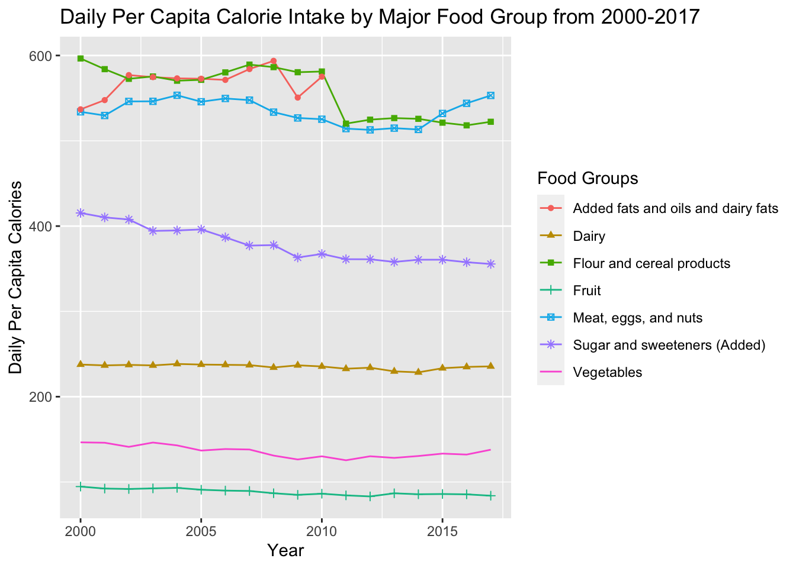
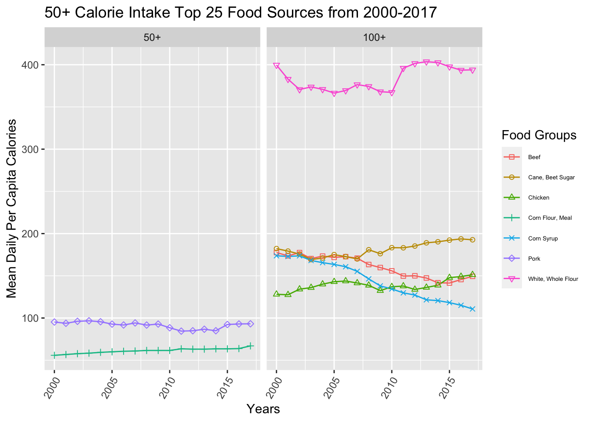
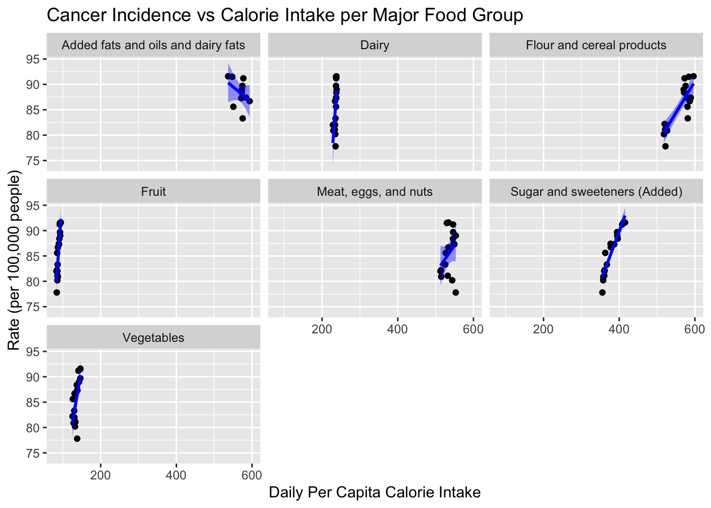
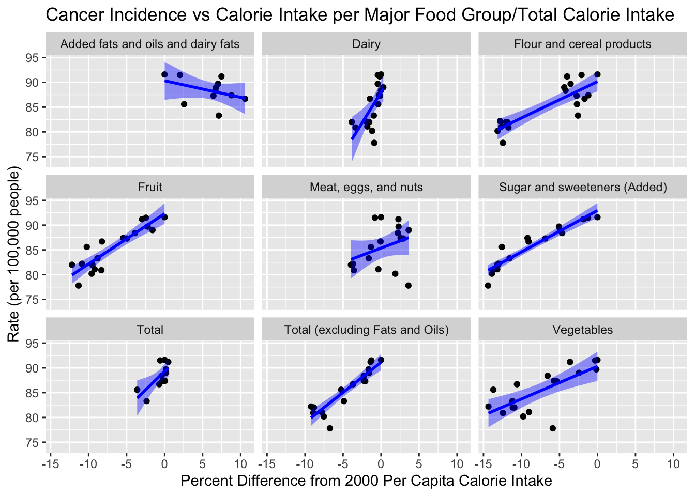
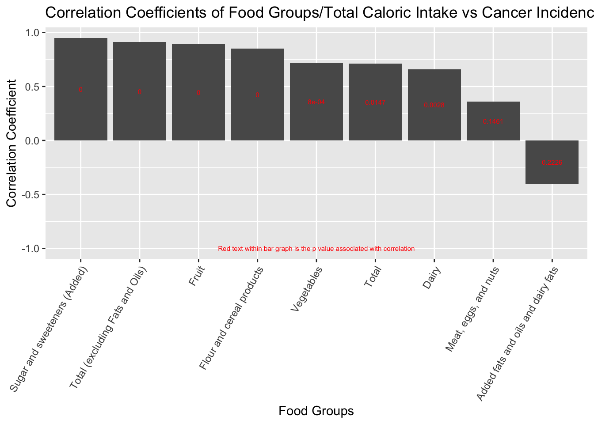
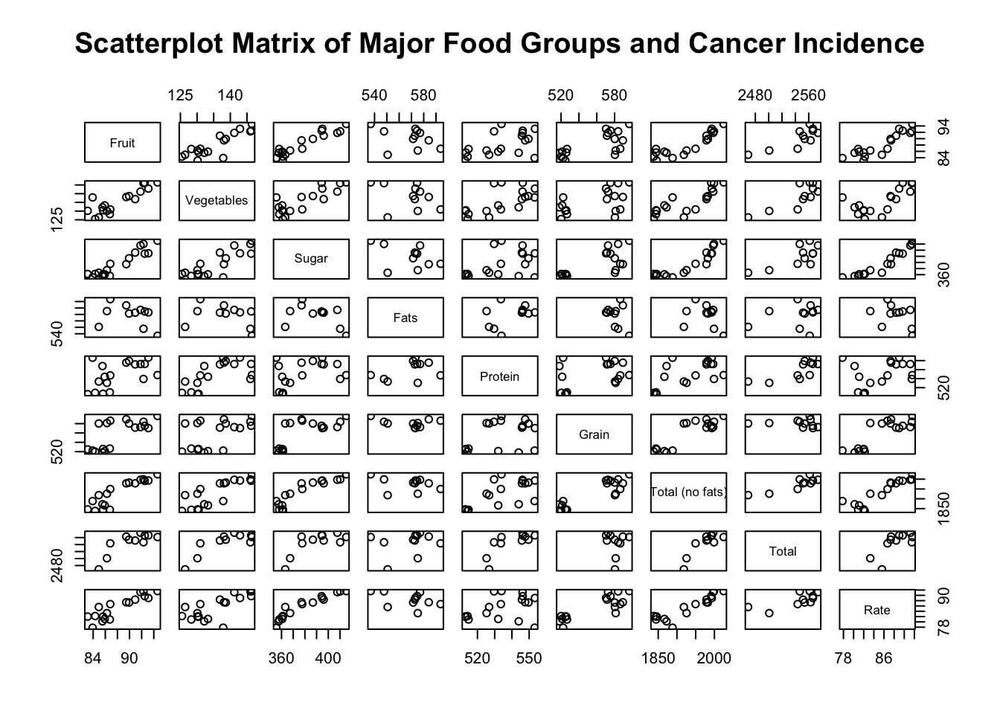
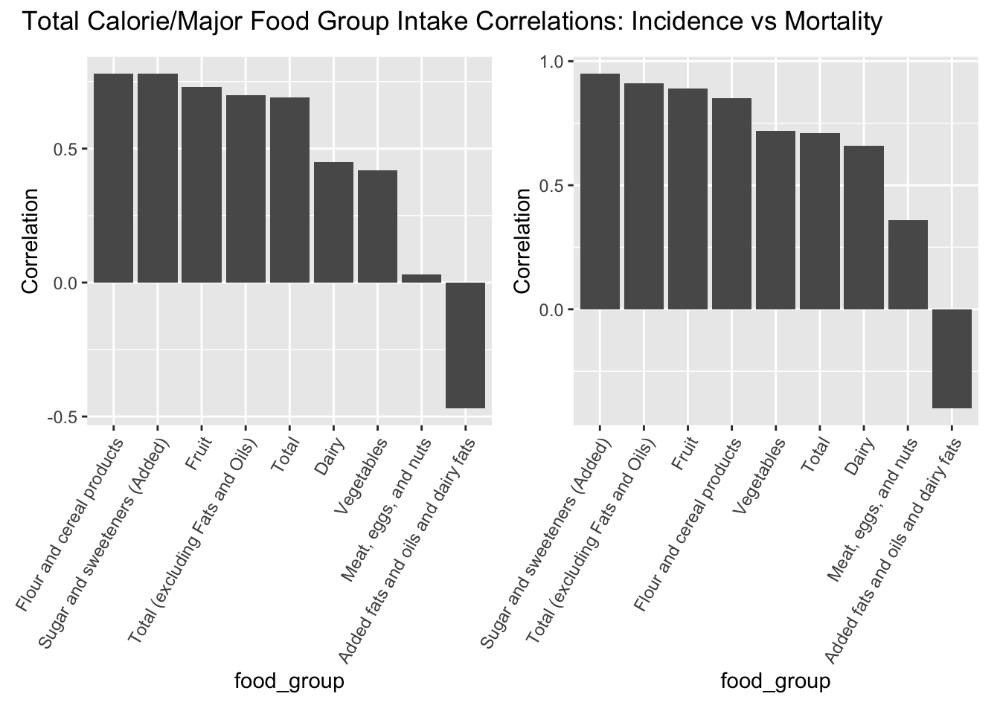

Chapter 5 Results
We’ll start our journey through the exciting world of digestive system cancer by looking at the trends in cancer incidence and mortality in recent years. Then, we’ll break down (digest) trends in diet at the level of food group and top food sources. That’ll give us a sense of each data set separately before we dive more deeply into possible relationships between diet and digestive cancer.
5.1 Digestive System Cancer Trends
Both the digestive system incidence and mortality rates have been decreasing since 2000. Digestive cancer mortality contains a distinct, nonlinear decrease since 2014 or 2015. Men are at a greater risk of developing digestive cancer compared to women, but the trends of incidence and mortality for both genders mirror one another. Now that we have established the trends of digestive system cancer, let’s explore dietary trends from 2000 to 2017.
5.2 Dietary Trends
5.2.1 Overall Consumption

These graphs show the trend of both the per capita total daily calorie intake and the calorie intake divided by major food groups. The most notable changes for the food groups were sugar and sweeteners, flour and cereal products, and meat, eggs, and nuts. Both sugar and sweeteners and flour and cereal products decreased from 2000 to 2017 while meat, eggs, and nuts increased from 2014-2017 after gradually decreasing before. Intake of fruits and vegetables has also slightly decreased over the years. In terms of calories, both total calories and total calories, excluding fats and oils have been decreasing from 2000-2017 as a whole. However, from 2011 to 2017 total calories excluding fats and oils has risen slightly. Calorie intake data for fats and oils from 2010 onward could not be found leading to the creation of the total calorie intake excluding fats and oils variable. Now that we know that calorie intake has been decreasing as a whole and within many major food groups, let’s look at certain foods within each food group to discover more trends.
5.2.2 Select Food

To determine how diet relates to digestive cancer incidence and mortality, we took the top 25 foods that contributed most to daily caloric intake and analyzed their changes from 2000 to 2017. These included several sources that have been related to digestive cancer, such as beef and high fructose corn syrup. Other foods that surprisingly (to us) cracked the top 25 were bananas, cane/beet sugar, and frozen potatoes. The highest calorie contributor (by volume) was white and whole flour by a large margin. All of these top food sources changed dynamically from 2000 to 2017, with foods such as peanuts, chicken, and butter increasing and other foods such as beef, high fructose corn syrup, and ice cream decreasing. Now that we’ve set the stage, let’s jump into the comparisons between cancer incidence/mortality and foods/total calorie intake.
5.3 Diet and Digestive Cancer
The destination of our journey. Let’s see how foods, food groups, and caloric intake relate to digestive cancer.
5.3.1 Cancer Incidence

Even using a smoother to draw a line through the data, the correlations are unclear using the raw caloric intake values. We can see that both “sugar and sweeteners” and “flour and cereal products” correlate with digestive cancer incidence but the trends of the other groups are unclear. We’ll use percent difference from 2000 per capita caloric intake from now on to show the trends more clearly.

We found that the decrease in total calorie intake correlated with the decrease in digestive cancer incidence. We also found that food groups such as “sweeteners and sugars” and “cereal/flour products” positively correlated with digestive cancer incidence. Surprisingly, we found that fruits caloric intake and vegetable caloric intake correlated positively with digestive cancer incidence. We think that since total caloric intake is associated with cancer incidence, the other food groups appear to be correlated as well.

Looking closely at this scatter plot matrix, our hunch about other major food groups being correlated with total caloric intake was correct. All major food groups trend upwards when compared to both total caloric intake and total caloric intake excluding fats. That doesn’t mean we shouldn’t look at specific foods more closely. To a food-poor nation, high-calorie food sources are gold. To a food-rich nation, the culture or status associated with these foods (or, the markets, supply chains, and industries that make them so available) might drive the overall trends we’re seeing.
Decomposing the food groups into the top 25 foods by caloric intake yields more interesting results. As expected, high fructose corn syrup and beef are positively associated with digestive cancer incidence. Ice cream, potatoes, and orange juice trend positively with incidence, too. On the other hand, we found that butter, peanuts, cane/beet sugar, and mozzarella trended negatively with cancer incidence, meaning the higher the calorie intake of these foods, the lower the cancer incidence.
Each of these trends are worth investigating in their own right. Given the complexity of the problem, it isn’t likely that these data are saying that butter, or peanuts, or mozzarella cheese are protective against digestive cancer. But they might represent clusters of diets or cultures with sets of behavior and/or genetics that are protective against digestive cancer. For the most part, we’ll leave those extrapolations to the reader. For a couple of the most surprising results (namely, fruits and vegetables … super foods!) we’ll look more deeply into the data.

The clearest take-away here is that when the summary data say “vegetables” they really mean “potatoes.” Everything else, by volume of caloric intake, has a much smaller effect, but is still interesting to see. And of course, potatoes are strongly associated with digestive cancer. Head lettuce and sweet corn are also strongly associated with digestive cancer incidence while sweet potatoes, broccoli and chili peppers are not.

The same story can be told about fruits, but maybe not as well. Orange juice is strongly associated with digestive cancer while also making up a large portion of calories by fruit. Apple and pineapple juice, as well as a number of canned fruits, show similar results. In a sense, these food sources are smuggling added sugar into the fruits category in the summary data above. That doesn’t let the rest of the fruits off the hook. Some are “good” (strawberries, avocados, cranberry juice) while others are not (peaches, pears).
5.3.2 Cancer Mortality
These graphs are a bit of a sanity check. Our cancer incidence and cancer mortality data are very similar, and we would expect to see the same results if we had compared our calories data to mortality instead of incidence.

Albeit to different degrees, that is indeed the case.